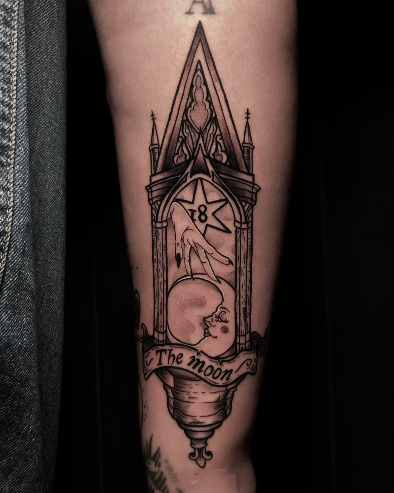
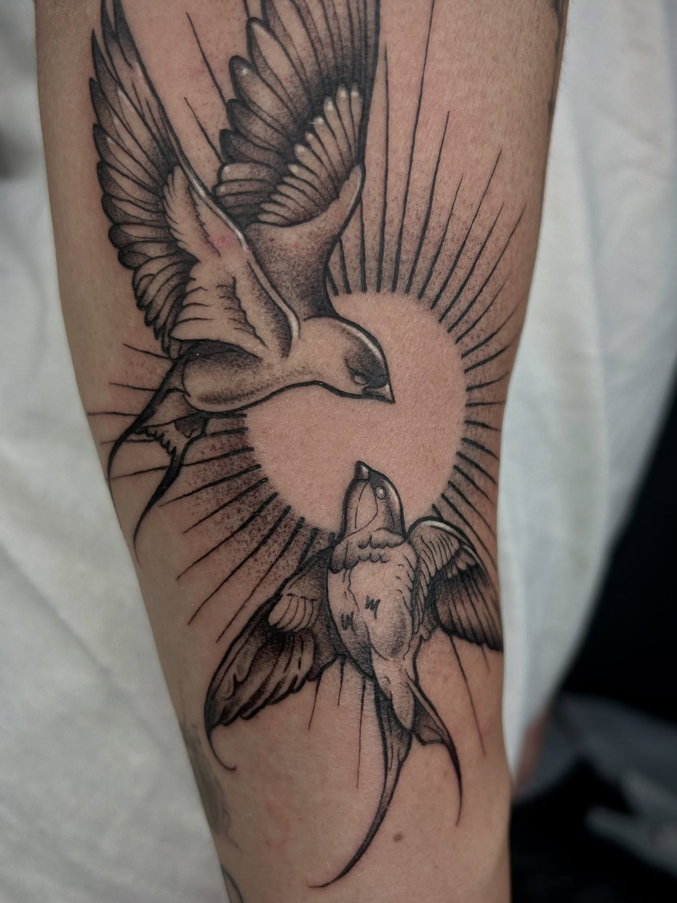
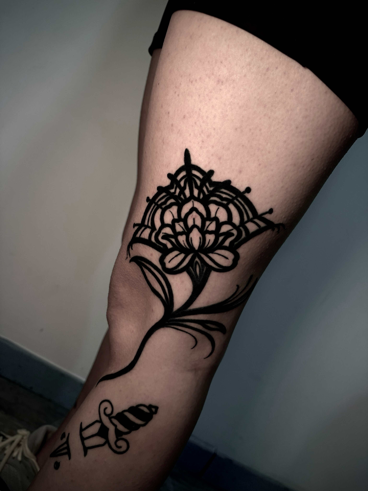
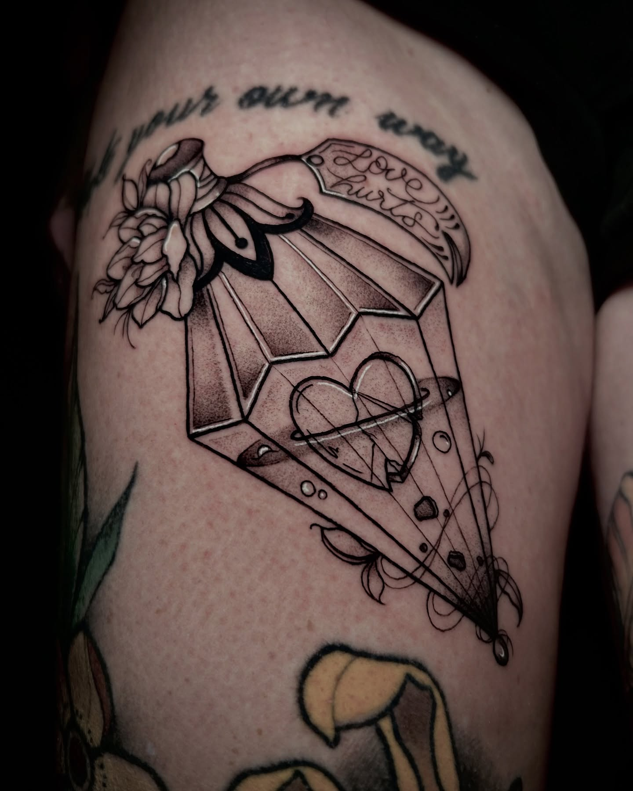
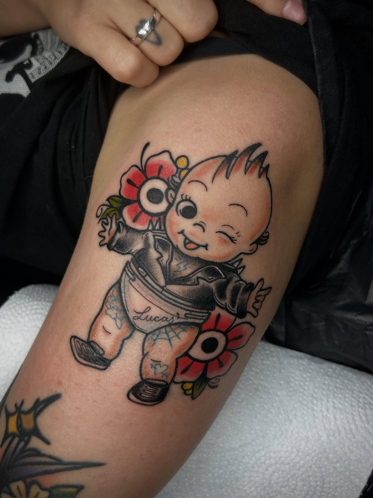
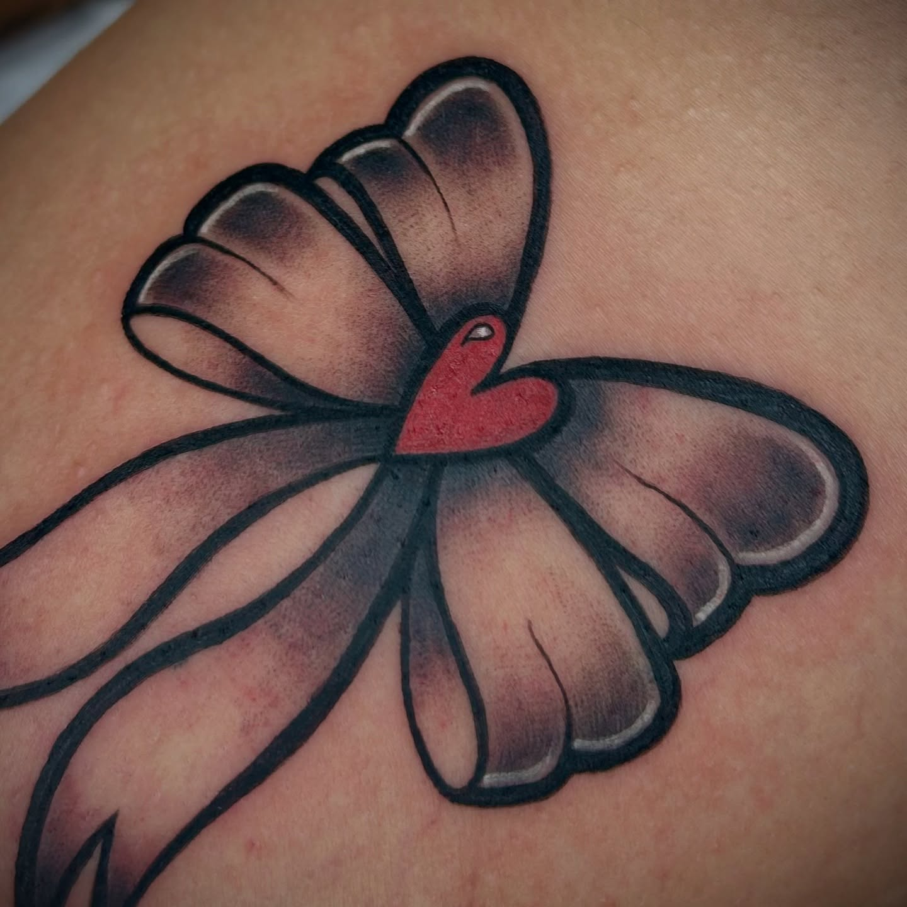

Tatuadora · Ilustrativo
Metx
Composiciones gráficas donde la línea negra marca el ritmo. Su selección combina blackwork, sombreado suave y acentos de color en motivos botánicos, simbólicos y de inspiración tradicional.

EstiloIlustrativo
Técnica visualLínea · Blackwork
PaletaNegro · Color selectivo
Selección confirmada
Símbolo, trazo y personalidad.
Una selección de piezas que alterna línea fina, masas negras, sombreado puntual y color para adaptar cada motivo a su escala y ubicación.






Metx · Zona Zero